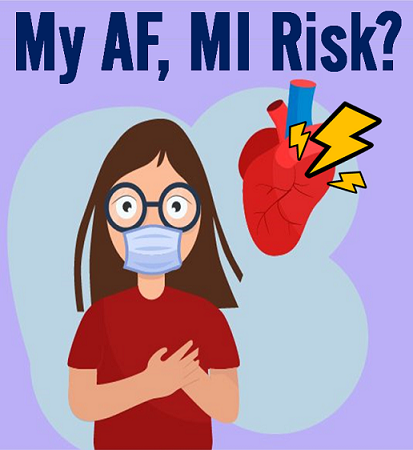

This app is an
individual risk calculator for calculating your future cardiac
diseases
risks (such as AF and MI).
It was validated by artificial
intelligence-based general population data (more than 500,000 people).
→
If your calculated
1-year risk is >1.0%, you may need to check your cardiac status.
Meet your cardiology doctor.
- AF: Atrial fibrillation, most common arrhythmia in the world,
increases stroke (>5 times), heart failure (>3 times), and mortality (>2.5
times) risks.
- MI: Myocardial infarction, major cause of the mortality in the world.


Individual risk calculator for new-onset AF / MI
Old age, hypertension, diabetes, and cigarette smoking can increase the risks of both AF and MI.AF had been known as the most common arrhythmia in the world which can increase the risk of stroke about more than 5 times,
and MI had been known as the major cause of the mortality in the world.
→ You can calculate your future new-onset AF / MI risks with this calculator.
2020.10.11 Updated
It may take about 40 seconds to calculate your risks. If you have
troubles with this calculator, please refreshify the calculator.
⇒ Calculate your future AF / MI risks
연산과정이 많아 실행에 40초 가량 소요될 수 있으며, 접속자가 많아 실행이 지연되는 경우 새로고침 부탁드립니다. 조금만 기다려주시면 감사하겠습니다..
연산과정이 많아 실행에 40초 가량 소요될 수 있으며, 접속자가 많아 실행이 지연되는 경우 새로고침 부탁드립니다. 조금만 기다려주시면 감사하겠습니다..
Individual risk calculator for new-onset AF (with ambient PM2.5 air pollution)
AF had been known as the most common arrhythmia in the world and its prevalence is increasing with aging process.It can increase the risk of stroke about more than 5 times, and ambient PM2.5 air pollution is thought to be associated with the increased risk of incident AF.
→ You can calculate your future new-onset AF risk with this calculator.
- PM2.5: Fine particulate matter less than 2.5mcg
(It requires the annual average concentration of PM2.5 in your main residential area. You can refer to the following website for real-time hourly PM2.5 concentration of your residential area : https://earth.nullschool.net ,
한국 기상청 대기환경 연보 https://www.airkorea.or.kr/web/detailViewDown?pMENU_NO=125 )
2020.10.23 Updated
It may take about 30 seconds to calculate your risks. If you have
troubles with this calculator,
please refreshify the calculator.
⇒ Calculate your future AF risk with
PM2.5
연산과정이 많아 실행에 30초 가량 소요될 수 있으며, 접속자가 많아 실행이 지연되는 경우 새로고침 부탁드립니다. 조금만 기다려주시면 감사하겠습니다..
연산과정이 많아 실행에 30초 가량 소요될 수 있으며, 접속자가 많아 실행이 지연되는 경우 새로고침 부탁드립니다. 조금만 기다려주시면 감사하겠습니다..